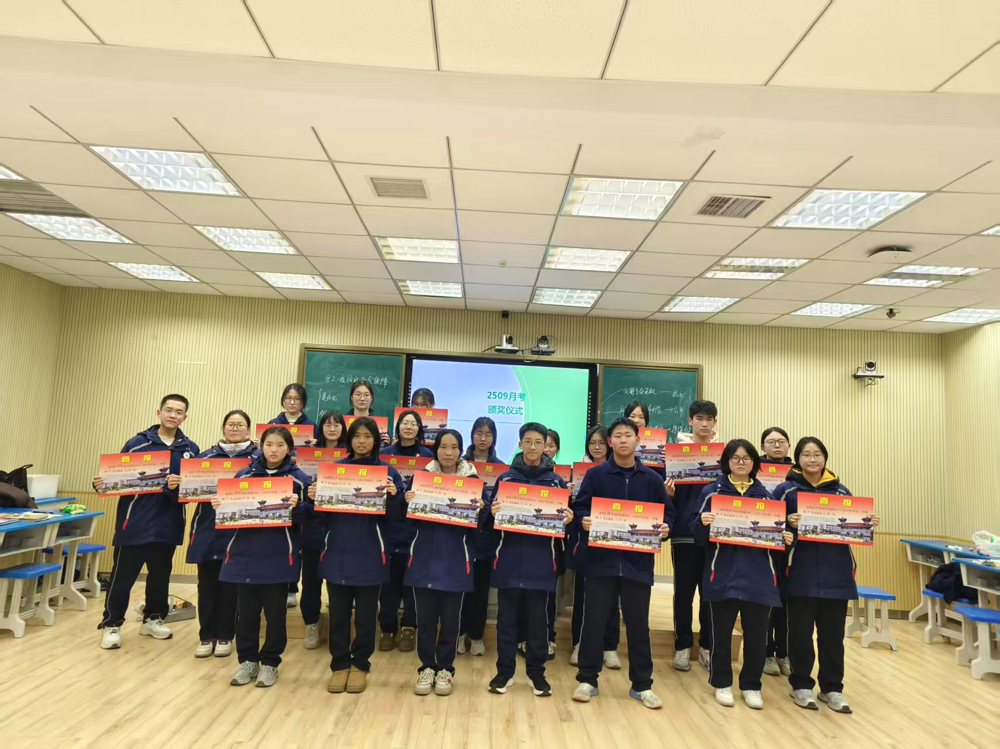
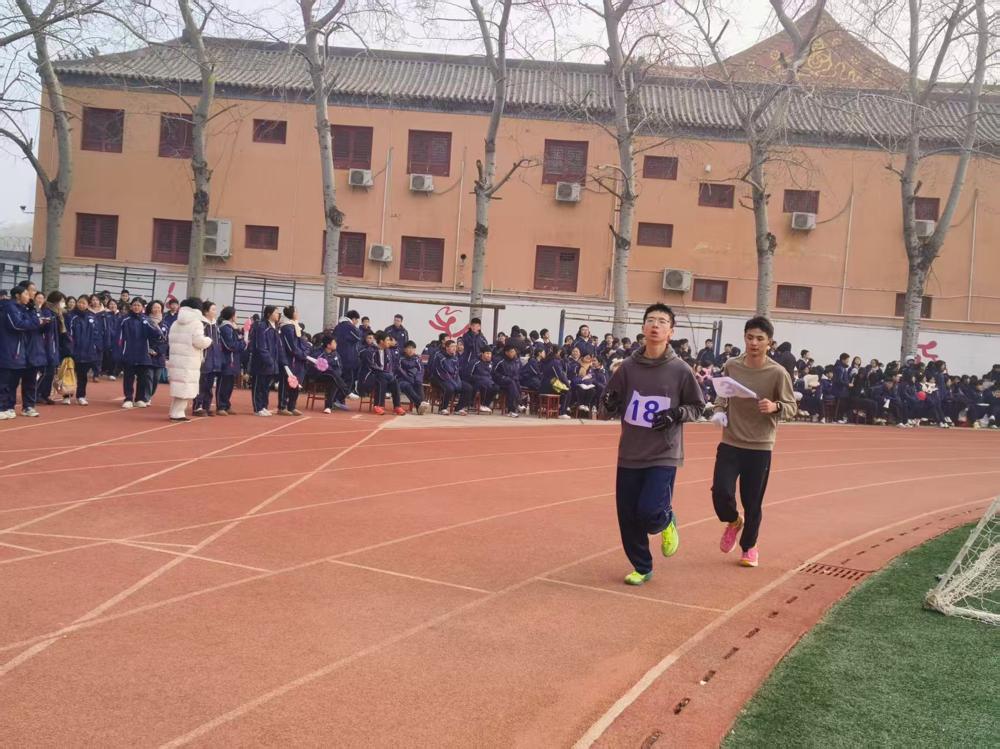

班级纪年
选科定档，文理相逢
丙午年孟冬 · 2025年11月
秋风微凉，我们迎来了高中生涯第一次重要选择。在选科填报的那一刻，我们不约而同地相聚于文科班。五十余份相似的志愿，让我们从原来的班级汇聚到九班这个大家庭，缘分让我们在此重逢，准备一起书写文科的锦绣篇章。
热血长跑，荣膺亚军
丙午年仲冬 · 2025年12月
寒风凛冽，却吹不灭九班燃烧的热血。在冬季长跑运动会上，同学们迎着风雪奔跑，用坚定的步伐丈量赛道。经过激烈的角逐，我们不负众望，荣获第二名！这是属于我们每一个人的荣誉，也是团结最好的见证。

辞旧迎新，录播献艺
丙午年季冬 · 2026年1月
岁末将至，我们相聚在录播室，共同开启特别的元旦晚会。平日里严肃认真的同学们，换上了俏皮的妆容，带来了精彩纷呈的卖萌节目，也为这个寒冷的冬天增添了无数温暖与欢笑。
月考表彰，榜样力量
丙午年季冬 · 2026年1月
考场如战场，笔锋所至皆是平日苦读的沉淀。在月考颁奖仪式上，九班学子以优异成绩证明了文科班的实力。一张张奖状背后，是无数个挑灯夜战的夜晚，更是对"以文载道"的最好诠释。


晨先锋运动会，青春飞扬
丙午年孟春 · 2026年3月
晨光熹微中，运动场上已是一片欢腾。九班健儿们在赛场上挥洒汗水，奔跑、跳跃、呐喊——每一个瞬间都闪耀着青春的光芒。不为掌声的诠释，不为刻意的征服，只为心中那份永不言弃的信念。


班级团建，凝心聚力
丙午年仲春 · 2026年4月
走出课堂，融入自然。班级团建活动中，我们放下书本、卸下压力，在欢声笑语中拉近彼此的距离。那些游戏间的默契配合、草坪上的肆意欢笑，让九班这个集体更加紧密地凝聚在一起。

琅琅书声，早读时光
丙午年 · 日常
一日之计在于晨。当第一缕阳光洒进教室，九班的早读声已回荡在教学楼。朗朗书声中，我们诵读经典、温习功课，用最朴素的方式迎接每一个崭新的日子。这是属于文科班最动人的风景。